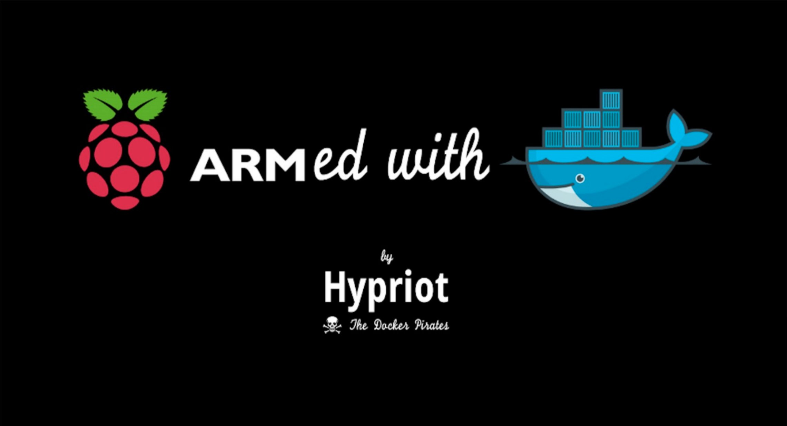

序言
Arch Linux
安裝
UEFI、MBR、GPT 區別
磁碟分區
安裝指南
VMware 虛擬機
命令與操作
ppp 程式包
固定網路協定位址
免費的安全通訊協定證書
節點安裝
樹莓派見習生
選購
作業系統
附錄
中譯詞彙對照
多媒體資源參考
Published with GitBook
多媒體資源參考
多媒體資源參考
頁籤
Arch Linux 標誌
Arch Linux 安裝導引程式
購買的樹莓派
Hypriot 標誌
Arch Linux 標誌
連結：
/mmrepo/archlinux_logo.jpg
來源：
https://www.archlinux.org/art/
使用頁面：
Arch Linux
、
作業系統
Arch Linux 安裝導引程式
連結：
/mmrepo/installGuide.sh
來源： 無
使用頁面：
安裝指南
購買的樹莓派
連結：
/mmrepo/buy_raspberry_pi.jpg
來源： 張本微
使用頁面：
選購
Hypriot 標誌

連結：
/mmrepo/hypriot_logo.jpg
來源：
https://blog.hypriot.com/post/close-encounters-of-the-third-kind/
使用頁面：
作業系統
results matching "
"
No results matching "
"